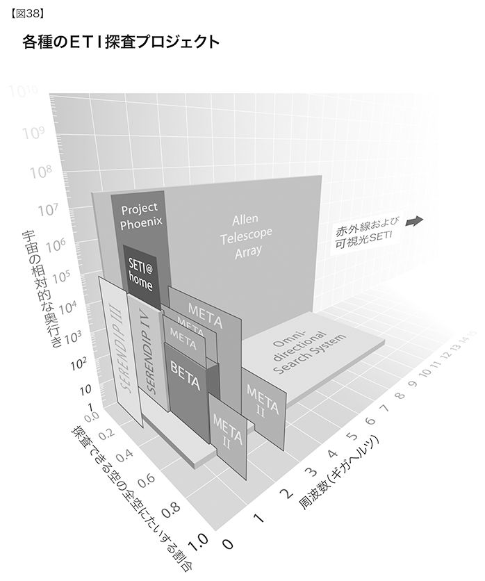
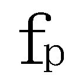
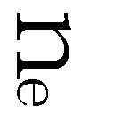
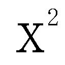

戦争──遠隔操作による、ロボット工学を利用した、頑健で、縮小化された、ヴァーチャル・リアリティのパラダイムについて
兵器がより知的なものになるにつれ、兵士の犠牲を減らしつつ、より正確に任務を遂行する傾向が劇的に進んでいる。しかし細かな戦況を生々しく報じるテレビニュースを見る限り、そうは見えないかもしれない。第一次、第二次世界大戦と朝鮮戦争の大きな戦闘では、わずか数日のうちに数万人が戦死したが、その映像は画像の粗いニュース映画に飛び飛びに記録されているだけだ。ところが今日では、われわれは最前列の席でほとんど全ての交戦を見ることができる。個々の戦争はそれぞれ入り組んだものだが、全体的には、精密で知的な戦争へ向かっていることは、死傷者数の調査からも明らかである。医薬品に関しても同じような傾向が見られ始めている。病気に対抗する知的な兵器は、これまでのものよりはるかに少ない副作用で特殊任務を遂行できるのだ。戦争における犠牲者減少の傾向は、民間人についても同様であるが、現在のメディア報道からはそのようには見えないだろう（第二次世界大戦では約五〇〇〇万人の市民が犠牲になったことを思い出してほしい）。
陸軍科学顧問団（ＡＳＡＧ）は科学調査の優先事項に関して合衆国陸軍に助言する団体だが、わたしはその五人のメンバーのひとりだ。ＡＳＡＧのブリーフィング、審議、勧告は機密事項であるが、陸軍と合衆国軍全体が推進するテクノロジーの全体的な方向性についてなら、お話しできるだろう。
合衆国陸軍の調査実験部門の長でＡＳＡＧとの連絡役を務めるジョン・Ａ・パーメントラ博士は、国防総省のトランスフォーメーション（変革）・プロセスの方向性について「高感度で、ネットワークを中心とし、迅速な決定が可能であり、あらゆる軍編成に勝り、いかなる戦闘空間においても圧倒的な力を発揮する」軍隊への動きである、と述べている046。また、目下開発中で、二〇二〇年代に完成予定のフューチャー・コンバット・システム（ＦＣＳ）については、「より小さく、より軽く、より速く、より破壊的で、より賢い」と評している。
未来の部隊展開とテクノロジーに関して劇的な変化が準備されている。細部に変更はありそうだが、陸軍は、約二五〇〇名の兵士と無人ロボットシステム、そしてＦＣＳ装備からなる旅団戦闘チーム（ＢＣＴ）の配置を想定している。一つのＢＣＴはおよそ三三〇〇の「プラットフォーム」（コンピュータ基盤）からなり、それぞれ独自の知的コンピューティング能力を備える。ＢＣＴには戦闘域についての共通操作画面（ＣＯＰ）があり、その情報は適切に変換されている。一方、各兵士はさまざまな形で情報を受け取る。その手段としては網膜へのディスプレイ（その他、さまざまな要警戒表示）や、将来的には神経への直接接続もありえるだろう。
陸軍の目標はＢＣＴ単体で九六時間、全師団で一二〇時間の部隊展開を可能にすることだ。各兵士の装備の重量は、現在はおよそ四、五〇キログラムあるが、新素材や新装置に換えることで一五キロほどに減り、一方で戦闘力は劇的に向上するだろう。装備のいくらかは「ロボットラバ」（四足歩行ロボット）が分担するようになる。
軍服の新素材は、ケブラーという新しい合成樹脂とシリカ・ナノ微粒子を分散させたポリエチレン・グリコールを用いて開発されている。その素材は通常はしなやかだが、圧力を受けるとただちに突きとおせないほど密集し、防護服となる。また、ＭＩＴにある軍用ナノテクノロジー研究施設では、「エクソマッスル」（外筋肉）というナノテクノロジー・ベースの素材を開発中で、戦闘員が重い装備を扱うときに筋力を大幅に補強することを目指している047。
米陸軍の主力戦車エイブラムスは戦闘員の安全に関して驚異的な記録をもっている。二〇年にわたって戦闘で使用されてきたが、死傷者はわずか三名にすぎない。これは装甲素材が進化するとともに、ミサイルなどの武器を迎撃するよう設計されたインテリジェント・システムが発達した結果だ。しかし、戦車は七〇トン以上あり、ＦＣＳが目指すより小さなシステムの一部となるには、かなりの減量が求められる。軽量でありながらひじょうに強固な新しいナノ素材（プラスチックがナノチューブと結合し、鋼鉄の五〇倍の強さとなるものなど）は、ミサイル攻撃を迎え撃つコンピュータ知能の発達とともに、地上戦闘システムの重量をおおいに減らすだろうと期待されている。
最近のアフガン戦争やイラク戦争で使われた武装プレデターに始まる無人航空機（ＵＡＶ）への流れは、今後急速に加速していくだろう。陸軍が研究しているＵＡＶの中には、鳥ほどの小型サイズのものも含まれ、偵察と戦闘、双方の任務を速く正確にこなすことができる。さらに小型の、マルハナバチぐらいのものも想定されている。実際のマルハナバチの航行能力は、左右の視覚システム間の複雑な相互作用によるものだが、最近そのリバースエンジニアリングがなされた。やがてはこれらの小型飛行マシンに適用されるだろう。
ＦＣＳの中心は自己組織型で超分散型の通信網になっており、個々の兵士と機器から情報を集め、適切な情報画面とファイルをそれを必要とする兵士と機器に返送できる。敵の攻撃を受けやすい通信中枢は存在しない。情報はネットワークの傷ついた部分をすみやかに迂回する。そのためになによりなすべきことは、完全な通信状態を維持しながら敵軍による回線の盗聴や操作を防止するテクノロジーの開発である。同様の情報セキュリティ技術は、電気的手段とソフトウェア・ウィルスを使用したサイバー戦争において、敵の通信への侵入・妨害・攪乱・破壊に適用されるだろう。
ＦＣＳは単体のプログラムではない。遠隔誘導、自律型、小型化、ロボットシステム、強固な結合、自己組織化、分散化、そして安全な通信を目指す総合的な軍事プログラムである。
アメリカ統合軍司令部のアルファ計画（この計画が陸軍全体における急速な考え方の変化を導いている）は、二〇二五年の戦闘を「ロボット化がかなり進んだ」ものとして想定しており、「任務内容によって、何段階かの自律性──調整可能な自律、管理下の自律、完全な自律──を発揮する」自律型戦闘ロボット（ＴＡＣ）が組み込まれていると予測する048。ＴＡＣは、ナノボットやマイクロボットから大型のＵＡＶやその他の航空機や車両まで、幅広いサイズで利用でき、また複雑な地形でも走行できるようにオートメーション化されている。ＮＡＳＡが軍用に開発した画期的デザインは、ヘビの形をしている049。
自己組織化する小型ロボットの群れという二〇二〇年代のコンセプトを体現するプログラムのひとつは、米海軍研究局の「自律型インテリジェント・ネットワーク・システム」（ＡＩＮＳ）で、それが目指す無人戦闘部隊は自律型無人ロボットからなり、水中、地上、空中を問わず活躍できる。そのロボット群を統括するのは人間の司令官で、プロジェクトの長、アレン・モシュフェグが「難攻不落の空のインターネット」と呼ぶネットワークによって分散的に命令を下し、コントロールする050。
群知能の設計については広範囲にわたって研究が進められている051。群知能とは、個々のエージェント（機能主体）は比較的単純なルールに従って動いていても、数多く集まれば複雑な行動を起こすことができるというものだ052。たとえば、昆虫の群れはコロニーの構造設計のような複雑な問題でも、しばしば知的に工夫して解決する。もちろん一匹一匹にそのような能力はないのだが。
ＤＡＲＰＡは二〇〇三年、一二〇体の軍事用ロボット（アイロボット社製、同社の創設者のひとりは、ロボット工学の先駆者、ロドニー・ブルックスである）からなる大部隊が群知能ソフトウェアによって、組織化された昆虫の行動をまねることができたと発表した053。ロボット工学システムがより小型化し、ますます発展するにしたがって、自己組織化する群知能の原理はいっそう重要な役割を担うだろう。
軍部には開発期間を短縮する必要があるとの認識もある。歴史的に、軍事プロジェクトの調査研究から開発までにかかる期間は、典型的なもので一〇年を超えている。しかし一〇年ごとに、テクノロジーのパラダイム・シフトが倍増する状況では、多くの武器システムは戦場で使われる前にすでに時代遅れのものとなってしまっているため、開発期間はスピードアップする必要がある。その方策のひとつは、新しい武器の開発およびテストにシミュレーション（模擬実験）を用いることだ。これまでは、プロトタイプを作って実際に使用して（しばしば爆破させて）テストする手法をとっていたが、シミュレーションに替えれば、武器システムの設計から実現、そしてテストまでを、はるかに短期間で行えるようになる。
もうひとつの重要な傾向は、戦闘から兵士を遠ざけて、その生存率を高めることだ。システムが遠隔操作できるようになれば、これは実現する。車両から操縦士が離れることで、より危険な任務を果たすことができ、設計上、はるかに操作しやすくなる。また、人命を守るためのさまざまな設備が不要になるため、全体がひじょうに小さくなる。将軍たちはさらに遠くへ移動している。アフガンの戦闘では、陸軍大将のトミー・フランクスはカタールの観測室から指揮をとっていた。
スマート・ダスト ＤＡＲＰＡは鳥やマルハナバチよりさらに小さなデバイスを開発中だ。それは「スマート・ダスト」（賢い塵）と呼ばれる、虫ピンの頭ほどの複雑なセンサーシステムである。開発が十分に進めば、これらのデバイス数百万個を敵の勢力圏にばらまいて、敵の動きを詳細に監視させ、最終的には攻撃を支援できるようになるだろう（たとえば、すぐあとで述べるナノウェポンを放つなど）。スマート・ダスト・システムの動力はナノエンジニアリングされた燃料電池で供給することになるが、同時にそれ自身の動きや風、熱流がもたらす力学的エネルギーを動力に転化することもできる。
重要な敵や、隠された武器の位置の発見は、スマート・ダストに任せればいい。その本質は目に見えない大量のスパイで、敵のテリトリーを数センチ単位で隅々までくまなく監視し、あらゆる人間（体温、磁気画像、果てはＤＮＡテスト、その他の手段によって）、あらゆる武器を識別し、敵側の目標物を破壊することさえできるのだ。
ナノウェポン スマート・ダストのさらに先は、ナノテクノロジー・ベースの兵器となり、それより大きいサイズの兵器は時代遅れになる。そのように広く分散した勢力に対抗するには、敵もナノテクノロジーを採用する他なくなるだろう。加えて、ナノデバイスに自己複製力をもたせれば、その能力をさらに拡大できるが、破滅的な危険も招き入れることになる。この問題については第八章で扱うことにしよう。
ナノテクノロジーはすでに幅広く軍事に適用されている。具体的には、ナノテク・コーティングによる装甲板の強化、化学兵器や生物兵器を迅速に発見し特定するチップ上に構築された“〝ナノ実験室”〟、一定地域の汚染を除去するナノスケールの触媒、状況に応じて自力で再構築できるインテリジェント素材、負傷者からの感染を防ぐために生物破壊性のナノ粒子が組み込まれたユニフォーム、プラスチックと結合してきわめて強力な素材を作りだすナノチューブ、自己治癒する素材、などである。たとえば、イリノイ大学では自己治癒するプラスチックが開発されているが、それはプラスチック基盤に液状モノマーの微小球と触媒を組み入れたもので、ひびが入ると微小球が砕けて自動的にその割れ目をふさぐようになっている054。
スマート・ウェポン ミサイルはすでに、標的への的中を願って発射される低能なものから、パターン認識を利用してみずから無数の戦術的決定を行っていく巡航ミサイルへと移っている。しかし銃弾は、依然として本質的には旧型ミサイルを小さくしたものであり、それに知能をもたせることがもうひとつの軍事目標となっている。
軍用兵器が小型化し、数を増やすにつれて、人間がデバイスのひとつひとつをコントロールすることは、ほぼ不可能になるだろう。それゆえ、自律制御のレベルを上げることがまた別の重要な目標となる。機械の知能が生身の人間の知能に追いついたあかつきには、より多くのシステムが完全に自律的なものになるだろう。
ヴァーチャル・リアリティ ヴァーチャル・リアリティ環境はすでに米空軍の武装プレデター（ＵＡＶ）のような遠隔操縦システムで使われている055。たとえ兵士がその兵器システムの中にいたとしても（エイブラムス戦車のように）、窓から外を見ただけで戦況を知ることはできない。ヴァーチャル・リアリティ環境は、実際の環境と同じ光景を見て効果的な制御を行うために必要とされる。ロボット兵器群を統括する人間の司令官も、これらの分散システムが集めてくる複雑な情報を把握するために、専用のヴァーチャル・リアリティ環境を必要とするだろう。
二〇三〇年代末期と二〇四〇年代までに、われわれの体がバージョン3.0の人体となり、非生物的知能が優勢になるにつれ、サイバー戦争の問題が舞台中央へ躍り出るだろう。あらゆることが情報化されると、自分自身の情報をコントロールし、かつ敵の情報伝達、命令、制御を妨げる能力が、軍事的成功を決める主要因となるのだ。
科学は知識の集大成であり、知恵は人生の集大成である。
──イマヌエル・カント（一七二四～一八〇四年）
今日の世界における教育の大半は、富裕な地域でさえ、一四世紀ヨーロッパの修道院学校によって確立された型からさして変化していない。学校はあいかわらず極度に一点集中した制度で、建物や教師という不足がちな資源のうえに成り立っている。教育の質もその地域の財政状況によって差が大きく（財産税で公教育の費用をまかなうアメリカの伝統は明らかにこのような不平等を助長している）、持つ者と持たざる者の格差へとつながっている。
他のあらゆる制度と同様に、やがては教育システムも分散化へと向かい、誰もが最高級の知識や教育にたやすくアクセスできるようになるだろう。現在はこの変容の初期段階にあるが、すでにネット上の膨大な知識や便利な検索エンジン、質の高い無料のウェブ講座、ますます効果的になっているコンピュータを使った教育などの到来によって、あまり費用をかけずに幅広い教育を受けられるようになった。
主要大学の大半は現在、広範囲にわたるオンライン講座を提供しているが、その多くは無料である。ＭＩＴのオープンコースウェア（ＯＣＷ）はその先駆けで、今もこの取り組みを牽引している。ＭＩＴは九〇〇の講座を──全講義科目の半数にあたる──ウェブ上に無料で公開している056。このことは世界中の教育界にすでに多大な衝撃を与えている。たとえば、ブリジット・ブイスーはこう書いている。「フランスの数学教師として、ＭＩＴに感謝したい。（その）ひじょうにわかりやすい講義は、授業を準備するうえでおおいに役立った」パキスタンの教育者、サイード・ラティフはこのＭＩＴ・ＯＣＷコースを自身のカリキュラムに組み入れた。彼のパキスタンの生徒はその教育の重要な一部として──事実上──定期的にＭＩＴの授業に出席していることになる057。ＭＩＴは二〇〇七年までに全ての講座をオンラインにし、オープン・ソース（つまり、非営利目的の利用については無料）にすることを目指している。
合衆国陸軍はすでにあらゆる非肉体的な訓練をウェブ・ベースの教育を利用して行っている。アクセスしやすく、安価で、ますます質が高くなるウェブ上の便利な講座もまた、自宅学習への傾向を勢いづけている。
インターネットをベースとした高品質の視聴覚コミュニケーションのインフラを整えるためにかかる費用は、第二章で述べたように、およそ年に五〇パーセントの割合で急速に下降し続けている。二〇一〇年の終わりまでには、世界の開発途上地域でも、未就学児から博士課程の研究者に至るまで、あらゆる学習レベルに応じた上質の教育に、きわめて安価でアクセスできるようになりそうだ。それぞれの町や村に訓練を受けた教師がいないために教育が受けられない、というようなことはもうなくなるはずだ。
コンピュータを利用する教育（ＣＡＩ）がより高度になると、学習内容を個々の学生に合わせる能力はおおいに伸張するだろう。新世代の教育ソフトはそれぞれの学生の強みと弱点をモデリングし、各学習者の弱点分野に的を絞った戦略を立てることができる。わたしが創設した会社、カーツワイル・エデュケーショナル・システム社が提供するソフトウェアは、数万の学校で読書障害の学生たちに利用され、それを介して通常の印刷物を手にとれるようにし、読む力を向上させる058。
現在の帯域幅には制限があり、また効果的な三次元ディスプレイもないため、今日通常のウェブへのアクセスによって得られるヴァーチャル環境はまだ「実際にそこにいる」とまでは言えないが、それもいずれ改善されるだろう。二〇二〇年代の初めごろには、視聴覚ヴァーチャル・リアリティ環境は完全没入型となり、解像度がきわめて高く、信頼に足るものになるだろう。大半の大学はＭＩＴのあとに続いて授業内容をウェブ上で公開し、ますます多くの学生がヴァーチャル授業に参加するようになる。ヴァーチャル環境は高品質のヴァーチャル研究室を提供し、そこでは化学や原子物理学、その他の科学分野の実験ができる。学生たちはヴァーチャルなトマス・ジェファーソンやトマス・エジソンと触発しあうこともできるし、ヴァーチャルなトマス・ジェファーソンに「なる」ことさえ可能なのだ。授業は数多くの言語のあらゆる学年レベルに対応するようになる。このような高品質、高解像度のヴァーチャル・クラスに参加するのに必要なデバイスは、第三世界においても、あたりまえにどこででも入手できるようになる。幼児から大人まで、学生は年齢を限らず、世界中いつでもどこでも最高の教育を受けられるようになるだろう。
教育の本質は、われわれが非生物的知能と溶けあうとき、ふたたび変化することになる。そのときにわれわれは、知識や技能を、少なくとも知能の非生物的な部分については、脳内に直接ダウンロードする能力をもつことになるだろう。今日、われわれが使う機械は日常的にそれを行っている。もし自分自身のラップトップ・コンピュータをスピーチや文字認識、翻訳、インターネット検索、いずれかの分野で最高水準にしたいと思ったら、コンピュータに正しいパターン（ソフトウェア）をすばやくダウンロードするだけでよい。われわれの生体の脳にはまだ、学習の成果物であるニューロン間結合や神経伝達物質をすばやくダウンロードするためのＣＯＭポートに相当するものはない。それは現在われわれが思考に用いている生物的パラダイムの数ある重大な制限のひとつであり、特異点を過ぎればそれも克服されるだろう。
もしあらゆる道具が他者の意思のままに、あるいは他者の意思を慮って仕事を成しとげるなら、もし動かす手がないのに機の杼〔横糸を左右に通す器具〕が織物を織ったり、ピックが竪琴をいたりするなら、親方は職人を、主人は奴隷を必要としなくなるだろう。
──アリストテレス
書くことが考案される前は、ほぼあらゆる見解は初めてのものとして受けとめられた（少なくとも少人数のグループにとってはそうであった）。初めてのときは、なにもかもが新しい。これに引き換え今日のわれわれの時代、芸術におけるあらゆる取り組みは、これまでになにがなされてきたかを熟知したうえで行われる。ポスト・ヒューマン時代の初期には、ものごとはふたたび新しいものとなるだろう。なぜなら、人間の能力をはるかに超える要求をするものはそれがなんであれ、ホメロスもダ・ヴィンチもシェイクスピアもなしえていないという意味で新しいものであるからだ。
──ヴァーナー・ヴィンジ059
今や［わたしの意識の］一部はインターネット上で生き、そこに常駐しているように見えます……ある学生は教科書を開いているかもしれません。テレビは点いたまま消音になっています……彼らはヘッドフォンで音楽を聴いているのです……ｅメールやインスタント・メッセージング（ＩＭ）の他に、宿題のウィンドウも開いています……マルチタスクを行っている学生は顔と顔を合わせる世界よりオンライン世界のほうを好みます。「現実の人生は」と彼は言います。「もうひとつの窓にすぎない」
──クリスティン・ベーゼ〔ＣＮＮニュースライター〕 ＭＩＴ教授シェリー・タークルの所見を報じて060
一六五一年、トマス・ホッブスは「人間の一生」について「孤独で、哀れで、やっかいで、野卑で、短い」と記述した061。この評価は当時としては正当だったが、現在、少なくとも先進国においては、テクノロジーの進歩によってこのような過酷な特徴はかなり克服されている。発展途上国においても平均寿命はわずかに短いだけだ。テクノロジーは概して、低機能のわりに高価な製品から始まり、次に高価なのはそのままだが、機能が少しばかり向上し、その後、高性能で安価な製品が登場する。そして最終的には、ひじょうに高性能になり、至るところに広まって、ほとんど無料になる。ラジオとテレビはこのパターンで推移し、携帯電話も同様である。現代のウェブ・アクセスは「高性能で安価」の段階にある。
今日、採用されているテクノロジーは、この初期段階から最終段階に至るまでにおよそ一〇年かかっているが、パラダイム・シフトの速度が一〇年ごとに二倍ずつ速くなっていけば、この開きは今後一〇年の間におよそ五年となり、二〇二〇年代のなかばにはわずか二、三年となるだろう。莫大な利益を生む可能性があるＧＮＲテクノロジー（遺伝学、ナノテクノロジー、ロボット工学）によって、これからの二〇年から三〇年に、最貧階級はほとんど消えていくだろう。しかし、これらの発展は加速する変化にたいする原理主義者の反発と、ラッダイト（反機械主義）的反応を呼び起こすだろう。
マイクロ・ナノテクノロジーをベースとした製造法の出現により、製品を作るのにかかる費用は重量あたりわずかな金額となり、それに製造プロセスを導く情報の費用がプラスされ、本当の価値はこの情報に属するようになる。すでにこれは現実になりつつある。ソフトウェア・ベースのプロセスは、設計と材料の調達からオートメーション工場での組み立てまで、今日のあらゆる製作工程を動かしている。ある品の製造コスト中、情報プロセスに費やされる費用の割合は、製品の種類によって異なるが、全般的には増加しており、急速に一〇〇パーセントに近づきつつある。二〇二〇年代の終わりまでには、事実上あらゆる製品の価値は──衣類、食物、エネルギー、そしてもちろん電子機器も──もっぱらその情報によることになるだろう。今日でも見られることだが、あらゆるタイプの製品とサービスについて、所有権を主張するものとオープンソースが共存するようになる。
知的財産権 製品やサービスの主要な価値がその情報に属するようになると、ビジネス・モデルを支えるために情報の権利の保護がとりわけ重要になる。そうした基盤があればこそ、十分な資本が供給され、価値ある情報を作りだすことができるのだ。今日、エンターテインメント業界では、音楽や映像の不正ダウンロードに絡んで小競り合いが起きているが、やがて価値の全てが本質的に情報に帰するようになったときには、さらに深刻な争いが起きるだろう。価値ある知的財産（ＩＰ）の創造を可能にするビジネス・モデルは、既存のものであれ新規のものであれ、明らかに保護を必要とし、さもなければ、ＩＰの供給自体が脅かされる。しかし、情報のコピーの容易さという、避けようのない圧力が存在する以上、業界は、一般の期待に応じてビジネス・モデルを公開すれば、損害をこうむるだろう。
たとえば音楽について言えば、レコード業界は新しいパラダイムを牽引しようとせず、高価なレコードアルバムに（つい最近まで）固執し、時代遅れのビジネス・モデルにしがみついていた。わたしの父がまだ若く、音楽家として世に認められようと苦闘していた一九四〇年代から、なにも変わろうとしなかったのだ。大衆は、その価格が妥当と思えるなら、情報サービスの著作権を大幅に侵害しようとはしない。携帯電話部門は、激しい侵害を受けないでいる業界の典型である。携帯電話の通話料は、テクノロジーの進歩とともに急速に安くなっている。もしも携帯電話業界が通話料金をわたしが子どもだったころのままにしていたら（当時は、たまに誰かが遠距離電話をするときには、他の家族もなにをしていようと中断して電話口に集まったものだ）、必ずや携帯通話の海賊版が出現していただろう。音楽メディアの海賊版に比べても技術的にはそう難しくはない。だが、携帯通話の不正使用は犯罪行為だという認識が広まっており、それは携帯電話料金は適正だという世間一般の見方によるところが大きい。
ＩＰビジネス・モデルはつねに変化の際にある。映画はファイルのサイズが大きいためダウンロードが難しかったが、急速にそれは問題でなくなってきている。映画業界は、オンデマンドの高画質映画のような、新しいスタンダードを目指す取り組みをリードしなければならない。音楽家は通常、生の演奏活動によって収入の大半を得ているが、そうしたビジネス・モデルも完全没入型のヴァーチャル・リアリティが登場する二〇一〇年代初めには攻撃対象となるだろう。それぞれの業界は頻繁にビジネス・モデルを作り変えなくてはならず、それにはＩＰそのものを作りだすのと同じくらい創造性を要するだろう。
最初の産業革命はわれわれの身体能力の限界を広げたが、第二の革命は心の限界を広げようとしている。すでに述べたように、過去一〇〇年の間に、アメリカの工場や農場の労働者人口は六〇パーセントから六パーセントに減った。この先二、三〇年で、肉体的、精神的ルーティンワークの全てが事実上、オートメーション化される。コンピューティングとコミュニケーションは、携帯用デバイスのような個別の機器を必要としなくなり、数々の情報資源からなる継ぎ目のないウェブ環境となって、われわれを取りまくだろう。すでに現代の仕事の大半はさまざまな形でＩＰの創造や促進と関わっており、それは人から人への個人的なサービス（健康、フィットネス、教育など）においても同じである。このような傾向はＩＰの創造──あらゆる芸術的、社会的、科学的創造を含む──とともに続き、われわれの知性が非生物的知能と融合して拡大することにより、いっそう促進されるだろう。ヴァーチャル・リアリティがあらゆる感覚を包囲するようになると、個人的サービスは、その大部分がヴァーチャル・リアリティ環境下へと移行する。
分散化 次の数十年間、全体の流れは分散化に向かって進む。今日、エネルギープラントは高度に集中した無防備なものであり、エネルギー輸送には船や燃料ラインが使われている。ナノエンジニアリングによる燃料電池や太陽光発電の出現により、エネルギー源をわれわれの生活基盤の中に広く分散し、しっかり組み込めるようになる。マイクロ・ナノテクノロジー製造は、安価なナノ加工の小規模工場に振り分けて行われるようになるだろう。ヴァーチャル・リアリティ環境では、ほとんど全てのことを、誰とでも、どこからでもできるようになり、オフィスビルや都市といった集中型テクノロジーは時代遅れになる。
バージョン3.0の人体は意のままに異なる形状へ変わることができ、大半が非生物的となったわれわれの脳は、もはや生物としての限られた構造に縛られることはない。そうなると、人間とはなにかということが徹底的に問われるようになるだろう。ここに述べた個々の変化は一足飛びに起きるのではなく、一歩ずつ小さな歩みが続いた末にもたらされる。そうした歩みはせきたてられるようにして進んでいくが、一般に受け入れられるのもまた急速である。体外受精のような新しい生殖技術について考えてみればよくわかる。最初は論争の的になったものの、たちまち広く利用され容認されるようになった。その一方で、変化はつねに原理主義者とラッダイトの反動を呼び起こし、それは変化の速度が増すにつれていっそう激しくなる。しかし、見た目は論争を呼んだとしても、人類の健康、富、表現力、創造性、そして知識にとって、圧倒的な利益をもたらすものであることはたちどころに明らかになる。
テクノロジーは、人々が万物を体験しなくてもいいように世界を編成する方法である。
──マックス・フリッシュ『アテネに死す（Homo Faber）』
人生は向こう見ずな冒険か、あるいはなにもないかのどちらかだ。
──ヘレン・ケラー
遊びもまた一種の仕事であり、人間があらゆる形式の知識を創造するうえで欠くことのできない役割を果たしている。人形や積み木で遊ぶ子どもたちは、本質的には遊びの体験を通じて創造していくことで、知識を形成している。ダンスを楽しむ人々は共同して創作プロセスに関わっている（この国のもっとも貧しい地域の子どもたちが道端でブレイクダンスを創りだし、それがヒップ・ホップを世に送りだしたことを考えてみよう）。アインシュタインはスイス特許事務所の仕事をそっちのけで、遊び心に満ちた思考実験に取り組み、その結果、不朽の理論である特殊および一般相対性理論を誕生させた。戦争が発明の父なら、遊びは発明の母だ。
ますます精巧になったテレビゲームと教育ソフトの間に、もはやはっきりとした区別はない。二〇〇四年九月に発売されたゲーム、ザ・シムズ２では、みずからの動機や意思をもつＡＩをベースとしたキャラクターが使われる。前提となる台本はなく、キャラクターたちは予測できない行動をとり、彼らが互いに影響し合うことで物語の道筋が浮かび上ってくる。ただのゲームだが、プレーヤーは社会意識の発展について考えさせられる。同様に、ますます現実味を帯びていくスポーツのシミュレーション・ゲームも、スポーツの技術と理解を促進するものだ。
二〇二〇年までに、完全没入型のヴァーチャル・リアリティは思わず引き込まれるような環境と経験に満ちた広大な遊び場となるだろう。当初よりヴァーチャル・リアリティは、遠く離れた他者と密接にコミュニケーションでき、また実に多様な環境を選べるという利点をもつことになる。初期のヴァーチャル・リアリティ環境は完全に信頼に足るものではないが、二〇二〇年代の終わりまでには現実と見分けがつかなくなり、あらゆる感覚と結びつくだけでなく、われわれの感情の神経学的な相互作用と関連するようになるだろう。二〇三〇年代になると、人間と機械、現実とヴァーチャル・リアリティの区別はなくなる。仕事と遊びについてもそうなるかもしれない。
宇宙のインテリジェントな宿命──宇宙にはおそらくわれわれしかいないと考える根拠
宇宙はわれわれが考えるより奇妙であるだけでなく、われわれが考えうるよりさらに奇妙なのである。
──Ｊ・Ｂ・Ｓ・ホールデン
宇宙はそのもっとも小さな産物をとおしてみずからになにを問いかけているのか。
──Ｄ・Ｅ・ジェンキンス 英国国教会の神学者
宇宙はなにを計算しているのだろう。われわれにわかる範囲で言えば、宇宙はひとつの質問にたいしてひとつの答えを出しているわけではない……そうではなく、宇宙は自分自身を計算しているのだ。標準理論〔宇宙の四つの力のうちの重力を除く三つ、電磁力、強い力、弱い力を統一する理論〕のソフトウェアから動力を得て、宇宙は量子場、化学物質、バクテリア、人間、星、銀河を計算する。計算するにつれて、宇宙自身の時空幾何学は、物理法則が認める究極的に精密なものへとまとめられていく。計算とは存在そのものなのだ。
──セス・ロイドとＹ・ジャック・ヌグ062
コペルニクス以前の時代に起源をもつわれわれの素朴な宇宙観は、地球は万物の中心であり人知は（神に次いで）もっとも偉大な贈り物であるというものだ。それからずいぶんと知識の深まった現在では、たとえある恒星の惑星にテクノロジーを作る種がいる可能性がひじょうに低い（たとえば一〇〇万にひとつ）としても、恒星の数はかなり多い（数十億×数兆）ため、進んだテクノロジーをもつ惑星も数多く（何十億や何兆も）あるはずだ、と考えられている。
これはＳＥＴＩ──地球外知的生命体探査（the Search for Extraterrestrial Intelligence）──の背景にある考え方で、今日一般によく知られている。しかし、ＥＴＩ（地球外知的生命体）はあまねく存在するという「ＳＥＴＩの仮説」を疑う理由がいくつかある。
まずは、ＳＥＴＩの一般的な見解について考えてみよう。ドレイク方程式（後述）を普通に解釈すると、宇宙には多くの（何十億の）ＥＴＩが存在し、われわれの銀河系には数千あるいは数百万存在するという結論になる。われわれはこの広大な干し草の山（宇宙）の中のごくわずかな部分しか探査していないのだから、今のところ針（ＥＴＩの信号）が見つけられなくても落胆すべきではない。干し草の山を探査するわれわれの努力はますますその規模を大きくしている。
「スカイ＆テレスコープ」誌より引用した図38は、三つの主要なパラメータを軸として異なる探査努力の可能性をグラフ化し、ＳＥＴＩプロジェクトの活動の及ぶ範囲を示すものである。三つのパラメータとは、地球からの距離、通信周波数、三六〇度全空のうち探査できる部分の割合である063。

図は未来のシステムを二つ含んでいる。そのひとつ、アレン・テレスコープ・アレイは、マイクロソフト社の共同創業者、ポール・アレンの名をとって命名されたものだが、ひとつあるいは少数の大きなディッシュ（パラボラアンテナ）を使うのではなく、数多くの小さな調査用ディッシュの使用が基本となっており、三五〇基のディッシュ全てが稼動するとき（計画では二〇〇八年）、それは二・五エーカー（一万平方メートル）のディッシュと同じ規模になる。一億にも及ぶ周波数チャネルを同時に聴くことが可能で、マイクロ波の全帯域を完全にカバーできる。それが目指す課題のひとつは、われわれの銀河系にある数百万の星を走査することである。プロジェクトが頼みとするインテリジェント・コンピュータは、数多くの低コストのディッシュから送られる信号をきわめて精密に識別できる064。
もうひとつの未来システム、全方位探索システムはオハイオ州立大学が開発中で、インテリジェント・コンピュータによって、多数配列された単純なアンテナから届く信号を解析する。インターフェロメトリ（干渉計測）の原理を利用すれば、全空の高解像度の画像をアンテナのデータから算出できる065。別のプロジェクトでは電磁気の周波数の範囲を広げ、たとえば赤外線や可視光線の範囲を探索しようとしている066。
図で示した三つのパラメータの他に、さらに六つのパラメータがある──たとえば、偏光（一定方向にだけ振動し、ゆえに波面が平面となるもの）などだ。このグラフから導きだされる結論のひとつは、この九次元の「パラメータ空間」の中でＳＥＴＩが探索してきた部分はごく薄い断片にすぎないということで、したがって、まだＥＴＩの証拠が見つからないのも当然ということになる。
しかし、われわれは単に一本の針を探しているわけではない。収穫加速の法則に基づいて考えれば、ＥＴＩがいったん初期の機械テクノロジーに到達すると、わずか二、三〇〇年のうちに莫大な能力レベルに達するはずで、この地球では二二世紀にはそうなっているとわたしは考える。ロシアの天文学者、ニコライ・Ｓ・カルダシェフは、「タイプⅡ」の文明について「恒星の力を利用して電磁波の放射（太陽を基準にすれば、およそ４×10の26乗ワット）による通信を行う文明」であるとしている067〔カルダシェフの「文明の三段階進化説」は利用可能なエネルギーの規模によって文明を三段階（惑星規模・恒星規模・銀河規模）に分ける〕。わたしの予想では（第三章を参照）、われわれの文明は二二世紀までにそのレベルに達するだろう。この宇宙には数多く文明が存在すると、多くのＳＥＴＩ論者が予測しているが、その文明のテクノロジーの発展レベルが、長大な時間的広がりの中に分散しているとすれば、われわれよりずいぶん進んだ文明も存在するはずである。つまり、タイプⅡの文明も数多く存在するはずなのだ。それどころか、これらの文明のいくつかがその所属する銀河に植民し、カルダシェフの言う「タイプⅢ」の文明に達する時間は十分にある。タイプⅢとは、所属する銀河のエネルギーを利用する文明のことである（われわれの銀河系を基準にすれば、およそ４×10の37乗ワット）。たったひとつでも進んだ文明があれば、何十億、何兆もの「針」──すなわち、その無数の情報プロセスによって加工され、あるいは副次的に生まれた送波がＳＥＴＩのパラメータ空間に大量の点として描かれたもの──を放出するはずである。現在までＳＥＴＩプロジェクトによって走査しえたのがパラメータ空間の薄い断片にすぎないとしても、タイプⅡの文明を見逃すとは考えにくく、タイプⅢはなおさらである。もしそのような進んだ文明が多数存在すると予測するなら、それに気づかないというのはおかしなことだ。これがフェルミ・パラドックスである。
ドレイク方程式 そもそもＳＥＴＩの探索が始まったのは、一九六一年に天文学者フランク・ドレイクが発表した方程式に大いに刺激されてのことだ。その方程式は、われわれの銀河系に知的文明（より正確には、電波を送信する文明）がどれだけあるかを見積もるものだ068（おそらく、同様の分析は他の銀河にも当てはまるだろう）。ドレイクの方程式の観点からＳＥＴＩの仮定を考えてみよう。ドレイクの式は次のようなものだ。
電波を送信する文明の数 ＝ ××××××
項目の意味：‥
Ｎ＝銀河系（われわれの銀河）にある恒星の数。現在の概算ではおよそ一〇〇〇億（10の11乗）。
＝恒星が周回する惑星をもつ確率。現在の概算では二〇パーセントから五〇パーセント。
＝周回する惑星をもつ各々の恒星について、生命維持に適した惑星の数の平均値。この要素についてはおおいに意見が分かれる。ひとつあるいはそれ以上とする概算もあれば（つまり、惑星をもつ各恒星には、平均して少なくともひとつは生命を維持できる惑星があるという見方）、一〇〇〇分の一あるいはそれ以下という、はるかに少ない見積もりもある。
＝生命の維持が「可能」な惑星について、生命が実際に進化する確率。ほぼ一〇〇パーセントからおよそゼロパーセントまで、見積もり幅は広い。
＝生命が進化するそれぞれの惑星について、知的生命体が進化する確率。とは、ドレイク方程式の中でもっとも意見の分かれるところだ。またもや、概算の範囲はほぼ一〇〇パーセント（すなわち、ひとたび生命が足場を得れば、知的生命体が必ずあとに続くというもの）からゼロパーセント近く（すなわち、知的生命体はひじょうにまれだとするもの）までとなる。
＝知的生命体のいる各惑星について、知的生命体が電波通信を行う確率。ひとたび知的な種となれば電波通信を発明し使用するものだろうという（もっともな）理由から、の概算はやより高く見積もられる傾向にある。
＝宇宙の寿命にたいして、文明が電波通信を行う平均的な期間の割合069。われわれの文明を例にとると、約一〇〇億から二〇〇億年の宇宙の歴史の中で電波通信を行うようになってからの期間はおよそ一〇〇年であるため、地球に関しては、は約10の-8乗となる。たとえばわれわれがあと九〇〇年間電波通信を続けたとすれば、10の-7乗となる。この要素は多くの事柄に左右される。もしも文明が電波通信とともに発達するはずのテクノロジー（核融合や自己複製するナノテクノロジーなど）の破壊的な力を統制できなくなって自滅したら、電波の送信は止まるだろう。これまでも地球上では（たとえばマヤ文明のように）、突然、組織化された社会や科学的探究を終わらせた文明があった（電波通信以前ではあるが）。しかしその一方で、全ての文明がこのような形で終わるとは考えにくいので、突然の滅亡というのは、電波通信を行う文明の数を減少させる理由としてはささやかなものだと思われる。
さらに顕著な問題は、文明の進歩によって電磁波（つまり電波）送信よりもっと有力な通信手段が用いられるようになることだ。ここ地球でも、長距離通信の手段は電波からケーブルや光ファイバーを用いた有線のものへと急速に移行している。そのため、通信全体の伝送容量は大幅に増えているにもかかわらず、地球から宇宙空間へ送信される電磁波情報の量は過去一〇年間、ほとんど変わらない。その一方で、無線による情報伝達の手段は増えてきている（たとえば、携帯電話やＷｉＭＡＸ〔半径約五〇キロメートルをカバーする二～一一ギガヘルツの無線方式〕のような新しい無線ＩＰなど）。通信は線を使うよりも、重力波のような従来と異なる媒体を使うようになるかもしれない。しかし、このように電磁波という通信手段がＥＴＩの通信テクノロジーにおいてもはや最先端ではないとしても、少なくともいくつかの用途には使われ続けるだろう（どんな場合でも、の算定は文明がそのような通信をやめてしまう可能性を考慮している）。
ドレイク方程式に測り知れない要素が多いのは明らかだ。しかし、それについて慎重に検討してきた数多くのＳＥＴＩ擁護者は、われわれの銀河系だけでもかなりの数の電波通信を行う文明が存在するはずだと主張する。たとえば、恒星の五〇パーセントが惑星をもち（＝0.5）、これら各々の恒星について生命の維持に適した惑星が平均で二個存在し（＝２）、その半数で実際に生命が進化し（＝0.5）、またその半数で知的生命体が進化し（＝0.5）、その半数で電波通信が可能となり（＝0.5）、電波通信可能な文明が電波を放出する期間の平均を一〇〇万年（＝10の-4乗）であると仮定すると、ドレイク方程式からは、われわれの銀河系には一二五万の電波通信可能な文明が存在するという結果が得られる。たとえば、ＳＥＴＩ協会の中心となっている天文学者、セス・ショスタックは、この銀河系では一万から一〇〇万の惑星が電波通信を行う文明をもつと推定する070。カール・セーガンは銀河系でおよそ一〇〇万、ドレイクはおよそ一万と推定した071。
しかし、今述べた変数の値はおそらくひじょうに高い設定になっている。生命の進化──特に知的生命体の進化──が困難であると仮定し、もっと控えめに見積もれば、結果はだいぶ違ってくる。仮に、恒星の五〇パーセントが惑星をもち（＝0.5）、これらの恒星の一〇分の一だけが生命の維持に適した惑星をもち（生命を維持できる環境はたやすく整うわけではないと考え、＝0.1とする）、これらの惑星の一パーセントで生命が実際に進化し（惑星での生命誕生は困難だと考え、＝0.01とする）、そのうちの五パーセントで知的生命体が進化し（地球ではここに至るまでひじょうに長い年月を要したことを考慮して、＝0.05とする）、その半数で電波通信が可能となり（＝0.5）、電波通信可能な文明が電波を放出する期間の平均を一万年（＝10の-6乗）であるとすると、ドレイク方程式が示す、銀河系に存在する電波通信可能な文明の数は、約一（正確には一・二五）となる。そのひとつがなにであるかはもうおわかりだろう。
結局のところ、賛成であろうと反対であろうと、この方程式に基づいて自信をもってＥＴＩを論じるのは難しい。ドレイクの式がなにを教えてくれたとしても、われわれの見積もりはきわめて不確かなものだ。しかし今、確実にわかっているのは、宇宙は沈黙しているように見えるということである──つまり、ＥＴＩによる通信の確たる証拠はまだ見つかっていないのだ。ＳＥＴＩの背景にあるのは、生命──および知的生命体──は普遍的に存在し、宇宙には電波通信を行う文明が一〇億まではいかないとしても一〇〇万はあるとする（あるいは少なくとも、地球まで光の届く宇宙〔地球から遠ざかる速度が光速より小さい範囲の「見える宇宙」。後述の「ハッブル距離」の範囲内〕には、今日までに地球に到達するほど早くから電波を送信していた電波通信文明があったとする）見方だ。しかし、これまでのＳＥＴＩの努力にもかかわらず、ただひとつさえその存在を明らかにすることはできなかった。そこで、「収穫加速の法則」の見地から、電波通信可能な文明は数多いとするＳＥＴＩの基本的な仮定について考えてみよう。これまで述べてきたように、進化のプロセスは本質的に加速するものだ。そのうえ、テクノロジーの進化は、そのテクノロジーを作りだす種を生みだした比較的緩慢な生物進化のプロセスよりもはるかに速い。われわれ自身の場合、まだ電気もコンピュータもなく、馬が最速の陸上輸送手段だった時代から、今日の高性能のコンピューティングと通信テクノロジーに至るまで、わずか二〇〇年しかかからなかった。前述したように、わたしの予想では、あと一〇〇年のうちにわれわれの知能は何兆倍にもなる。つまり、初期の機械テクノロジーの活発な出現から、知能と通信能力を桁違いに拡大するまでに要するのは、わずか三〇〇年なのだ。このように、ある種がひとたび電力を得て電波を発するほどテクノロジーを発達させると、およそ数百年というわずかな期間でその知力は大幅に拡大する。
地球で必要とされる三〇〇年は、一三〇億年から一四〇億年と概算される宇宙の年齢072からすると、きわめて短い期間である。わたしのモデルによれば、文明がわれわれのような電波通信レベルに到達した場合、タイプⅡの文明に達するのにかかる時間はわずか一〇〇年──長くても二〇〇年──と考えられる。この銀河系に何百万はないとしても何千もの──そして地球まで光の届く宇宙には何十億もの──電波通信可能な文明があるというＳＥＴＩの基盤をなす仮定を認めるとしても、それらの文明は数十億年の発展過程において、われわれとは異なる段階にあるはずだ。遅れているものもあれば、進んでいるものもあるだろう。われわれより進んだ文明が全て、わずか数十年先を行っているとはとても思えない。そのような進んだ文明の大半は、一〇億年とまではいかなくとも数百万年は先行しているだろう。
機械テクノロジーが特異点の知能と通信の爆発的増大へと進歩するにはわずか数世紀あれば足りるのだから、ＳＥＴＩの仮定を認めるなら、われわれまで光の届く範囲の宇宙には、テクノロジーが想像もつかないほど進んだ文明が数十億（銀河系では数千から数百万）存在するはずだ。ＳＥＴＩプロジェクトの議論の少なくともいくつかは、他の分野にも見られる線形的な考え方をベースとしている。それは、文明はやがてわれわれのテクノロジー・レベルに達するとしても、テクノロジーは数百万年とは言わずとも数千年かけてひじょうにゆるやかに進むというものだ。しかし、実際には、いざ電波が登場すると、タイプⅡの文明をもつまでにわずか数百年しかかからない。つまり、天空は知的な電波通信で輝いているはずなのだ。
ところが、天は静まりかえっている。宇宙がこれほど静かなのは奇妙であり、また興味をそそられる。核物理学者のエンリコ・フェルミが一九五〇年の夏、「皆はどこだ？」と問いかけたように073。十分に進歩した文明がその通信を周波数不明の微弱な信号に限っているわけではないだろう。なぜ、ＥＴＩは揃いも揃ってそんなに恥ずかしがりやなのだろうか。
これまでにも、いわゆるフェルミ・パラドックス（とは言え、それがパラドックスになるのは、多くの観測者がドレイク方程式に当てはめる楽観的な数値を認めた場合に限られる）に答えようとする試みはあった。よくある答えは、文明はいったん電波通信可能なレベルに達したのち姿を消したのかもしれないというものだ。この説明はごく少数の文明について言っているのなら認められるが、ＳＥＴＩの仮定ではそのような文明は数十億にのぼるため、その全てが滅亡したとは信じがたい。
他の議論も同様で、中には、「彼ら」はわれわれの邪魔をしないと決めて（われわれがいかに原始的かを考慮して）、ただ静かに見守っている、というものもある（「スター・トレック」のファンにはおなじみの道徳観だ）。重ねて言うが、存在するはずの数十億ものそのような文明の全てが同じ決定をしたとは考えにくい。また、おそらく彼らはより高性能な通信パラダイムへと移行した、という説もある。わたしは電磁波──ひじょうに高い周波数のものも含む──よりも性能の高い通信方式はありうると考えているし、進んだ文明（次世紀には人類もそうなっている）がそのような方式を発見し開発する可能性を信じている。しかし、これら数百万もの数多い文明において、電磁波の果たす役割としてはなにも残されておらず、他のテクノロジーの副産物としてさえ生じない、ということはまずありえない。
つけ加えておくが、わたしはなにもＳＥＴＩプロジェクトの価値を否定するつもりはない。なにも見つからないとわかることは、なにかが見つかるのと等しく重みがあるのだから、プロジェクトは重視されるべきだ。
ふたたび、コンピュータの限界 宇宙の知性に「収穫加速の法則」がどのように関わっているか、さらに深く考えてみよう。第三章でわたしは「究極の冷たいラップトップ」について議論し、一リットル、一キログラムのコンピュータの能力の上限はおよそ10の42乗cpsであると予測したが、これは一〇〇億人の脳が一万年かけて考える量を一〇マイクロ秒でこなすものだ。もしエネルギーや熱をもっと巧みにコントロールできれば、その一キログラムの物質の潜在的なコンピューティング能力はおそらく10の50乗cpsまで高まるだろう。
コンピューティング能力をこのレベルまで高めるのにどれほどの技術を要するのかを思うと意気阻喪するが、以前述べたように、思考実験の前提とすべきなのは、一キログラムあたり10の42乗cpsを実現する文明のすさまじい技術力なのであって、現在の人間の限られた技術力ではないのだ。10の42乗cpsの文明は10の43乗cpsに至る方法を見出すだろうし、その後も10の44乗、さらにその先へと続くだろう（実際、このようにしていずれの段階も次へ進むと言える）。
いったん文明がこのようなレベルに達すると、そのコンピューティング能力が一キログラムの物体に制限されないのは明らかで、それは今日のわれわれの場合となにも変わらない。現代の文明が質量やエネルギーを用いてなにをなしとげられるか、考えてみよう。地球の質量はおよそ６×10の24乗キログラム、木星はおよそ1.9×10の27乗キログラムである。もし水素とヘリウムを無視するならば、太陽系の質量は太陽を除いておよそ1.7×10の26乗キログラムであり、太陽系全体の質量は、太陽がその大半を占めているが、およそ２×10の30乗キログラムである。ざっと上限を分析してみると、もし太陽系の質量を、物質一キログラムあたり10の50乗cpsと見積もられるコンピューティング能力の限界（ナノコンピューティングの限界に基づく）に当てはめれば、われわれの「周辺」のコンピューティングの限界は10の80乗cpsとなる。
わかりきったことだが、このような上限に達するのは困難だろうという実際的な考え方もある。しかし、太陽系の質量の一パーセントの二〇分の一（〇・〇〇〇五）でもコンピューティングや通信の資源に向けられるならば、「冷たい」コンピュータとして10の69乗cps、「熱い」コンピュータとして10の77乗cpsの能力が得られるのだ074。
このような規模でのコンピューティングについて、技術面からの見積もりがなされてきた。その計算では、複雑な設計上の要求、すなわちエネルギー利用、熱放散、内部通信速度、太陽系内の物質の成分、その他多くの要因を考慮している。これらの設計はリバースコンピューティングを使用しているが、第三章で指摘したように、エラー修正や結果通知に必要なエネルギーについても考慮しなければならない。コンピュータ神経科学者のアンデルス・サンドベルイの分析では、ゼウスと呼ばれる地球サイズの計算する「物体」のコンピューティング能力を概説している075。この「冷たい」コンピュータの概念設計は、ダイヤモンドイドの形をとったおよそ10の25乗キログラムの炭素（地球のおよそ一・八倍の質量）からなり、５×10の37乗のコンピュータ・ノードで構成され、それぞれのノードは大規模な並列処理を行う。ゼウスのコンピューティング能力のピークは10の61乗cpsであり、データストレージ（記憶装置）として使用されるなら10の47乗ビットになる。その設計を制限する主な要因となるのは、抹消可能なビットの数であり（その設計では一秒あたり2.6×10の32乗ビットまでの抹消を許容する）、それは主に宇宙線や量子効果から発生したエラーを修正するために使われる。
一九五九年、宇宙物理学者のフリーマン・ダイソンは、進歩した文明において恒星の周囲を球殻で覆ってエネルギーと居住地を供給するという構想を提唱した。ダイソン球の概念のひとつは、文字どおり、薄い球面で恒星を取り囲んでエネルギーを集めるというものだ076。文明は球の内側にあり、球の外側（恒星から離れた）へ廃熱（赤外線エネルギー）を放出する。ダイソン球の別の（もっと実際的な）バージョンは、湾曲した多くの殻をつなげて恒星の周囲を囲むもので、そのひとつひとつは恒星の放射を一部分のみ遮断する。このようなダイソン殻は、現存する惑星、とりわけ地球のように守るべき生態系を抱く惑星に影響を与えないよう設計することが可能である。
ダイソンがそのような構想を提唱したのは、進化した「生物的な」文明にたいし莫大な空間とエネルギーを供給する手段としてであったが、それは恒星規模のコンピュータの基礎として使うこともできる。そのようなダイソン殻は太陽のまわりを地球に届く太陽光に影響を与えることなく周回する。ダイソンは知的な生物が殻や球の内側に生存すると考えたわけだが、文明は、ひとたびコンピューティングを発明すれば、急速に非生物的知能へ移行するため、殻に居住しているものを生身の人間とする理由はないだろう。
ダイソン構想のもうひとつの改良策は、ある殻から放射された熱を、それと平行して太陽からさらに離れた位置にある殻によって捉え、利用できるようにするものだ。コンピュータ科学者であるロバート・ブラッドベリはそのような層は何層もできることを指摘し、「マトリョーシカ・ブレイン」とうまく名づけたコンピュータを提唱しているが、それは太陽あるいは他の恒星の周囲をめぐる入れ子式の一連の殻によって構成される。同種の概念設計をサンドベルイも検討しており、そちらはウラノスと呼ばれ、水素とヘリウムを除いた太陽系の質量（太陽を除く）の一パーセント、つまりおよそ10の24乗キログラムを使用するよう設計されており、ゼウスより少し小さい077。ウラノスは10の39乗のコンピュータ・ノードを供給し、その計算能力は10の51乗cps、記憶容量は10の52乗ビットと見積もられる。
コンピューティングはすでに広く分散化──集中化するよりも──しており、わたしの予想では、その傾向はますます進むだろう。しかし、今述べたように、われわれの文明がコンピューティングの密度を増すにつれて、分散した膨大な数のプロセッサ（演算処理装置）はこのような概念設計の特性を備えるようになると考えられる。たとえば、マトリョーシカ・ブレインという着想は、太陽光発電や熱放散においてもっとも役立つだろう。このような太陽系規模のコンピューティングは、第二章で述べたわたしの推定によれば、おそらく今世紀の終わりごろに登場するということを、心に留めておいてほしい。
より大きく、より小さく 太陽系のコンピューティングが10の70乗から10の80乗cpsと仮定すると、わたしの予測では、二二世紀の初期にわれわれはこの限界に達する。コンピューティングの歴史は、その力が内側と外側の双方に拡大することを語っている。この数十年の間、個々の集積回路チップ上のコンピューティング素子（トランジスタ）の数はおよそ二年ごとに倍増しているが、それは内側への発展（一キログラムあたりのコンピューティング密度の高まり）を意味する。しかし、外側への拡大も進んでおり、チップの数は（現在のところ）年間およそ八・三パーセントの割合で増加している078。この二方向の発展が続くという予想は理にかなっており、また内側への発展（三次元回路での）が限界に達すれば、外側へ発展する速度は著しく増すだろう。
さらに、コンピューティングの拡大を支える太陽系内の物質やエネルギーが限界に突き当たれば、主な拡大の形態としては外側へ向かう他なくなる。前章ではもっとも小さな規模のコンピュータの実現性について検討した──つまり素粒子サイズのコンピュータについてである。そのようなピコ（10の-12乗）あるいはフェムト（10の-15乗）レベルのテクノロジーはそのサイズを縮小し続けることによって、コンピューティングのさらなる発展を可能にするだろう。しかし、それが可能だとしても、ナノサイズより小さなコンピュータを使いこなすには技術的難問が多々あると予想されるため、外へ広がろうとする圧力は続くだろう。
太陽系を超える拡大 われわれの知能が太陽系の外へ広がっていくとすれば、その速さはどれくらいだろうか。拡大はいきなり最速のスピードで始まるわけではないが、きわめて短期間で最速（光の速さかそれ以上）とほぼ変わらないレベルに達するだろう。批判者の中にはこの見方に反発し、人（あるいは他のＥＴＩ文明からの高度な生物）や装備を光速に近いスピードで押しつぶすことなく送るのはひじょうに困難だと主張する人もいる。もちろん、この問題はゆっくり加速することによって避けられるが、別の問題として恒星間物質との衝突があるだろう。しかし、この反論もまた、そういう段階にまで発達した知能がどういうものであるかを見落としている。ＥＴＩが銀河系や宇宙へ勢力を伸ばすことについては、当初は、人類史上の移住や入植の例にならい、基本的に他の星系に人間（あるいは、他のＥＴＩ文明の場合は知的生命体）の移民を送り込むことを目指すものと考えられていた。そうすれば、移住者たちは通常の生殖によってその数を増やし、同様にそこから勢力を拡大し続けられる、と考えたのだ。
しかし、これまでに見てきたように、今世紀末までに地球の非生物的知能は生物的知能の何兆倍も強大になるため、そのような任務に生身の人間を送りだしてもあまり意味がない。それは他のＥＴＩ文明にとっても同じことだろう。これは単に生物的人間がロボットの探査装置を送りだすという意味ではない。そのときまでに人間文明は、あらゆる実際的な目的を非生物が果たすようになっているのだ。
このような非生物の移民はそれほど大きい必要はなく、それどころか基本的には情報からなるものである。とは言え、ただ情報を送るだけでは不十分で、他の恒星や惑星系にたいして物理的な影響力をもつなんらかの物質でできた装置が必要となる。探査装置としては自己修復可能なナノボットで十分だろう079（ナノボットはナノ規模のものだが、全体のサイズはミクロンで測られる）。われわれはそれを何兆もの大群として送りだせる。そうした「種」をもうひとつの恒星の惑星系に植えつけると、いくらかは適切な物質（炭素や他の必要な元素）を見つけて複製し、自分自身のコピーを作るだろう。
いったんナノボットのコロニーができあがれば、その知能を最適化するために必要な追加情報は、純粋な情報伝送の形で受け取ることができる。その情報に物体は伴わず、エネルギーだけが関わっており、光速で送られてくるだろう。人間のような大きな生命体と違って、これらのナノボットはひじょうに小さいため、光速に近い速さで移動できる。もうひとつのシナリオとして、情報伝送はあてにせず、必要な情報をナノボットの記憶装置に埋め込んでおくことも考えられる。どちらを選ぶかは未来のスーパーエンジニアたちにゆだねることにしよう。
その追加情報のソフトウェア・ファイルは何十億ものナノボットに拡散する可能性がある。そのうちのひとつ、あるいはほんの少数が到着地で自己複製して「足場」を作れば、やがてそれははるかに大きなシステムに成長し、周辺を進むナノボットを集められるようになる。したがって、それ以降、その方向へ送られるナノボットの大半は、ただ通り過ぎることはなくなる。こうして確立されたコロニーは、その知能を最適化するために必要な情報と分散したコンピューティング資源を収集できるようになるのだ。
ふたたび、光の速さ このように、太陽系規模の知能（つまり、タイプⅡの文明）が宇宙の他の場所へ広がるときの最高速度は、光速にきわめて近くなる。現在、われわれは情報や物体を送るための最高速度は光速だと理解しているが、少なくとも、それが絶対的な限界ではないのではという指摘はある。
光速を追い抜く可能性については推測の域を出ないと考えるべきであり、わたしとしては、今世紀中にわれわれの文明が経験するであろう重大な変化のひとつとは考えていない。しかし、この限界近くを設計する工学技術の可能性は、宇宙の他の場所へわれわれの知能が進出する速度について、重大な示唆を与えてくれる。
最近の実験では光子（フォトン）の飛行速度は光速のほぼ二倍と計測されたが、それは量子の位置の不確定性の結果である080。この結果は実際に情報伝達についての分析に役立つわけではない。なぜなら、それは実際に情報が光速より速く伝送されることを可能にするわけではなく、また、われわれの根本的な関心は通信の速度にあるからだ。
光速よりはるかに速い速度を生じているかに見える遠隔作用については、量子ディスエンタングルメントというもうひとつの興味深い事実がある。同時に生成された粒子は「量子絡み合い」になりうる。それは、一定の特性（スピンの位相など）はそれぞれの粒子において決まるものではなく、二つの粒子で同時に決定されるというものだ。言葉を変えれば、ある特性の数値が片一方の粒子で測定された場合、たとえ二つの粒子が遠く離れていたとしても、その瞬間にもう片方の粒子についてもきっかり正確な数値が出るということである。粒子間にはなんらかの情報的なつながりがあるようだ。
この量子ディスエンタングルメントは光速の何倍もの速度をもつことが測定されている。一方の粒子の状態が変換されると、それにつれてもう一方の粒子の状態も変換すると考えられ、それにかかる時間は情報が粒子から粒子へ光速で送られたとした場合の何分の一かである（理論上、時間の経過はゼロとなる）。たとえば、ジュネーヴ大学のニコラ・ジザン博士は、ジュネーヴを横切る光ファイバーをとおして「量子絡み合い状態の光子」を右と左に送った。七マイル（約一一・三キロ）離れたとき、光子はそれぞれガラス板にぶつかった。光子はそれぞれ板を通過するかあるいははね返るかについて「決定」しなくてはならなかった（量子絡み合いでない光子を用いた先行実験では選択はランダムとなった）。しかし、その二つの光子は量子絡み合いの状態であったため、同じ瞬間に同じ決定をしたのである。何度繰り返しても、結果は同じだった081。
この実験は、「隠れた変数」による説明を完全に除外するものではなかった──隠れた変数とは、同位相にある（周期の中で同じ位置にある）各粒子が内包する測定不能な要素のことで、つまり、一方の粒子が測定されるとき（たとえば、ガラス板を通過するか、はね返るかを決定する必要があるとき）、もう一方が内包する変数も同じ値になっているというものだ。とすれば、「選択」は二つの粒子間で実際に通信が行われた結果というよりも、この隠れた変数が同一の値だったために生じたことになる。しかし、たいていの量子物理学者はこの解釈を否定している。
仮にこれらの実験は二つの粒子間の量子絡み合いを示すという解釈が容認されたとしても、情報はどうやら光速をはるかに超えるスピードででたらめに（量子の根深いランダム性ゆえに）送られるだけで、ファイルの中のビットのようにあらかじめ決まった情報ではないように見える。しかし、このような量子のランダムな決定を利用した宇宙空間の異なる地点への情報伝達は、コードを暗号化するような場合には価値があるだろう。二つの異なる場所が同じランダム列を受け取り、その後、ランダム列は一方の場所ではメッセージを暗号化するのに用いられ、もう一方ではその解読に用いられる。他者が量子絡み合いを破壊せずにその暗号化されたコードを盗聴することは不可能であり、このため盗聴は検出される。すでに、商品化された暗号化製品にはこの原理を組み込んだものがある。これは量子力学が思いがけない形で応用されたものだといえる。というのも、量子力学のもうひとつの応用──量子コンピューティング──によって、大きな数の素因数分解に基づく標準的な暗号化方式は終わりとなる可能性があるからだ（絡み合った量子ビットを数多くもつ量子コンピューティングはそのような暗号を簡単に解いてしまう）。
もうひとつ、光速を超える現象としては、宇宙が拡大する結果として銀河が互いに遠ざかっていくスピードがある。仮に二つの銀河間の距離がいわゆる「ハッブル距離」〔互いの銀河の光が届く限界〕より大きければ、これらの銀河は互いに光速を超えるスピードで遠ざかっている082。これはアインシュタインの特殊相対性理論に反するものではない。なぜなら、この速度は銀河が宇宙を移動しているからではなく、宇宙自体が拡大しているために引き起こされているからだ。しかし、それもまた、光速を超える速度での情報送信を助けるものではない。
ワームホール 光速という一見明らかな限界を回避する方法として、二つの実験的な可能性がある。ひとつはワームホール──目に見える三次元を超える次元での宇宙の折り重なり──を使うことだ。これは実際には光より速いスピードでの航行とは関係がなく、たんに宇宙の幾何学は素朴な物理学が示すような単純な三次元ではないことを意味しているにすぎない。しかし、ワームホールや宇宙の折り重なりが至るところに存在するならば、われわれはこれらの近道を使って短時間のうちにどこへでも行けるだろう。あるいはそれを設計することさえできるかもしれない。
一九三五年、アインシュタインとネイサン・ローゼンは「アイシュタイン－｜ローゼン橋」という、電子やその他の粒子がとおる小さな時空トンネルについて発表した083。一九五五年、物理学者ジョン・ホイーラーはこのトンネルを「ワームホール」と表現し、その言葉を初めて世に知らしめた084。ワームホールに関する彼の分析は、それが一般相対性理論となんら矛盾しないことを示した。一般相対性理論では、宇宙は本質的に湾曲していると見なしている。
一九八八年、カリフォルニア工科大学の物理学者マイケル・モリス、キップ・ソーン、ウーリー・ユルツェヴァーは、そのようなワームホールを設計する方法についてくわしく説明した085。カール・セーガンからの質問に答え、彼らはいろいろなサイズのワームホールを開いた状態にしておくために必要なエネルギー量について述べた。また、量子ゆらぎに基づけば「真空の空間」は絶えず原子より小さなサイズの小ワームホールを作りだしているとも指摘した。エネルギーを加え、量子物理学と一般相対性理論（この二つの分野は統合が難しいことで知られる）双方の要求を満たすことにより、このワームホールは拡張され、原子より大きい物体も通れるようになるだろう。そこへ人間を送り込むことは不可能ではないものの、きわめて困難である。しかし、上述したように、実際には情報を付加したナノボットさえ送れればいいわけで、そうなるとワームホールの直径は、数メートルどころか数ミクロンもあれば十分だ。
ソーンとその博士課程の学生モリスおよびユルツェヴァーは、一般相対性理論と量子力学のどちらにも矛盾しないで、地球と遠い場所を結ぶワームホールを作る方法についても述べた。彼らが提唱した技術は、自然発生した原子より小さいワームホールにエネルギーを加えて拡大し、さらに超伝導状態の球を用いて二つの「ワームホールの口」を安定させるというものだ。ワームホールが拡大し安定した後、地球上にある入り口とのつながりを保ちながら、もう一方の入り口を他の場所へ移動させる。
ソーンはその入り口を遠く離れた場所へ移動させる方法として、小さな宇宙船によって二五光年先にある恒星ヴェガへ運ぶという例を示した。光速にきわめて近い速さで航行することによって、その旅は宇宙船内の時計で見れば相対的に短くなる。たとえば、宇宙船が光速の九九・九九五パーセントで航行する場合、その航行にかかる時間は地球で測定すればおよそ二五年となるが、船内の時計はわずか三か月しか進まない。伸びたワームホールは二つの場所の直接的なつながりを維持するとともに時間的つながりも維持する。そのため、地球の時間で考えても、地球からヴェガへ行くのに三か月しかかからなくなる。適切な工学技術の進歩によって、そのようなつながりは宇宙のどこにでも設定可能になるだろう。光速に近い速さで自由に航行することによって、宇宙の他の場所とつながるのに要する時間は──通信と輸送の双方で──、何百万、何十億光年離れていたとしても、相対的に短くなるはずだ。
ワシントン大学（セントルイス）のマット・ヴィサーが提案したモリス－｜ソーン－｜ユルツェヴァー構想を改善したワームホールは、いっそう環境が安定しており、人間も通行できるようになっている086。しかし、わたしの考えでは、これは不必要だろう。この規模の技術計画が実現するころには、人間の知能は非生物的部分が優位を占めるようになって久しいだろう。ソフトウェアとともに分子サイズの自己修復するデバイスを送れば十分であり、そのほうが簡単だ。アンデルス・サンドベルイは、一ナノメートルのワームホールは一秒あたり10の69乗ビットもの膨大な情報を送ることができると試算している087。
物理学者デヴィート・ホッホベルクとヴァンダービルト大学のトマス・ケップハートは、ビッグバンのわずかのちに重力はひじょうに強くなり、そのエネルギーがあれば自己安定するワームホールが大量に自然発生できたはずだ、と指摘する088。このようなワームホールの大部分はまだあちこちに残っていて、宇宙全体にわたって遠く幅広い地点を結ぶ広大なネットワークの回廊を作っているそうである。新しいものを作るより、このような自然のワームホールを発見し利用したほうがずっと簡単かもしれない。
光速を変化させる 二つめの可能性は、光速そのものを変えることである。第三章で、光速は過去二〇億年にわたって10の８乗分の四・五だけ減少していたことを示す発見について述べた。
二〇〇一年、天文学者ジョン・ウェッブは六八個のクエーサー〔ひじょうに明るく輝く天体。恒星状天体〕の光を調査したとき、微細構造定数と呼ばれるものの変化に気づいた089。光速は微細構造定数が含む四つの定数のひとつであるため、その観測結果は、宇宙の状態の変化が光速の変化を引き起こすことを示唆しているのかもしれない。ケンブリッジ大学の物理学者ジョン・バロウとその同僚は、二年間に及ぶ卓上実験で光速をわずかに変化させる技術をテストしようとしている090。
光速は変化するかもしれないという考えは、宇宙のインフレーションの時代（その歴史の初期、宇宙はひじょうに急速に膨張した）、光速は今よりずっと速かったとする最近の理論と一致する。光速が変化する可能性を示すこのような実験は明らかに確証が必要で、また、現在示している変化はわずかでしかない。しかし、もしはっきりと確認されたなら、その発見は重大だ。なぜなら、工学技術をもってすれば、その微細な変化を大いに拡大できるからだ。もう一度繰り返すが、現在、思考実験として取り組むべき課題は、われわれのような当世の科学者の技術で実験し成功できるものではなく、将来その知能を何兆倍にも増強した人間の文明が実行できるものでなければならないのだ。
今さしあたって言えるのは以下のことだ。やがて超高度な知能が光速で外へ拡大するようになるが、現代の物理学でわかっていることからすると、光速は実際にはその拡大の速さの限界ではないらしい。仮に光速が不変だとわかったとしても、その限界に縛られず、ワームホールをとおってすばやく他の場所へ到達することはできるはずだ。
フェルミ・パラドックス、ふたたび 生物進化の尺度は数百万年から数十億年に及ぶことを思い出してみよう。つまり、もしも別の文明がどこかに存在するとしたら、それもまた、膨大な時間をかけて発展という意味で拡大し続けているだろう。ＳＥＴＩの仮説によれば（全ての銀河には）無数のＥＴＩが存在するはずであり、技術的にわれわれよりはるかに進歩したものも無数にいるはずだ。また、そのような文明がコンピューティングを発明してから影響圏を少なくとも光速で拡大するまでにかかる時間は、最大でもわずか数世紀である。こう仮定すると、われわれがその存在にまだ気づいていないのはどうしたわけだろう？
わたしが出した結論は、どうやら（確信ではないが）今のところそのような他の文明はないらしいということだ。言葉を変えれば、われわれがその先頭を走っているのだ。そう、確かに、ピックアップ・トラックやファスト・フード、絶え間ない争い（そしてコンピューティングも！）とともにあるわれわれのささやかな文明は、宇宙における複雑さと秩序の創造の最先端にいるのだ。
では、どうしてそのようなことがありうるのか。生命体がいるとされる惑星の数からすると、これはきわめて起こりえないことではないのか？ まったくもっておかしな話だ。しかし、同じくらいありえないのは、われわれの宇宙の存在である。この宇宙は物理法則とそれに伴う定数を、生命が進化できるようにきわめて絶妙かつ正確に備えているのだ。しかし「人間原理」〔宇宙に人間が存在するのは、宇宙の諸法則が人間の存在に都合よくできているからだ、とする考え〕によれば、もし宇宙が生命を進化させなかったら、われわれは存在せず、宇宙の存在に気づかなかったことになる。しかしわれわれはここにいる。つまり、同じく人間原理によれば、われわれは宇宙を先導する立場でここに存在しており、やはり、もしわれわれが存在しなかったら、そのことに気づかなかったのだ。
この考え方にたいする反論をいくつか考えてみよう。
おそらくひじょうに進んだてくのろじーをもつ文明はどこかに存在するが、その知能の光の届く範囲の外側にわれわれはいる。すなわち、彼らはまだここに来てはいない。そうだ、これならＥＴＩはわれわれからは見えない（聞こえない）のだから、ＳＥＴＩはやはりＥＴＩを発見できないだろう。少なくとも、上述したように光速を操作するかあるいは近道を発見するかしてわれわれ（あるいはＥＴＩ）が光の届く限界を突き破る方法を見つけるまでは。
あるいは、彼らはすでにわれわれの中にいるが、見えないままでいようと決めているのだ。もしそんなふうに決めているのなら、うまく気づかれずにいることはできるだろう。とはいえ、ここでもまた、全てのＥＴＩが同じ決定をしているとは考えにくい。
ジョン・スマートは彼が「超越」と呼ぶシナリオの中で、文明をもった生命体がひとたび宇宙の近隣一帯をみずからの知能で満たしたなら、彼らは（複雑さと知性の指数関数的成長を続ける場として）新たな宇宙を創造し、本質的にはこの宇宙を去ると述べている091。スマートは、この選択はひじょうに魅力的で、ＥＴＩが進んだ段階に達したことによる必然の結果として、矛盾なくフェルミ・パラドックスを説明するものだと述べている。
ついでに言えば、わたしは常々、巨大でぐにゃぐにゃの生物がわれわれと同様に大きな宇宙船を操縦するというＳＦの発想はありそうもないものと考えてきた。セス・ショスタックはこう述べている。「論理的に考えれば、今後発見される地球外生命体は機械の知能であり、われわれのような生物的知能ではないと予測される」思うに、これはたんに生物が機械を送りだす（今日行われているように）という意味ではなく、むしろ地球までやって来られるほど発達した文明であれば、テクノロジーの発生から長い時を経ているはずであり、かさばって扱いづらい有機体や装備を送る必要はないということだろう。
もしそうした生命体が存在するとして、ここ地球までやって来る理由はなんだろうか。まずは観察すること、そして知識を集めるためだ（今日われわれが地球上で他の種を観察しているのと同じである）。もうひとつは、その知能をさらに拡大するための、基盤となる物質やエネルギーを探しに来るのだ。そのような探索や知識拡大（ＥＴＩによるものであれ、あるいはその段階まで発達したわれわれの文明によるものであれ）に必要とされる知能や装備はきわめて小さく、基本的にはナノボットと情報の送信とで済むようになるだろう。
どうやら太陽系はまだ他の誰かのコンピューティングには使われていないようだ。そして、もしこの人類とは異なる文明がただ知識を得るためだけにわれわれを観察し、そのうえで沈黙を守ろうと決め込んでいるのだとしたら、ＳＥＴＩにそれを見つけることはできないだろう。進んだ文明がわれわれに気づかれたくないと思うのであれば、それは可能なはずだ。そのような文明は今日のわれわれよりはるかに高度な知能をもつものであることを心に留めておこう。おそらくそれが姿を現すのは、われわれが進化の次の段階へ進んだときだろう。具体的には、人間の生身の脳がテクノロジーと融合したとき、つまり、特異点のあとのことだ。しかし、ＳＥＴＩの仮説が示すようにそのような高度に発達した文明が数十億もあるとするならば、その全てが人間に見られないように姿を消す決定を下すというのは、やはりありえないことのように思える。
人間原理、ふたたび われわれは人間原理でふたつの現実をどうにか説明しようとしている。ひとつはこの宇宙が驚くほど生物にやさしい法則を備えていること、そしてもうひとつはこの惑星に実際に生物が存在することである。
まず始めに、人間原理が宇宙に適用されていることについて、よりくわしく考えてみよう。自然界の定数はまさに宇宙がより複雑に成長していくために必要な値となっているが、それにわれわれが気づくことから、宇宙に関する疑問が生じる。もし宇宙定数、プランク定数、その他多くの物理定数がほんのわずかでも異なる値であったなら、原子、分子、恒星、惑星、有機体、人間は存在しなかっただろう。宇宙はちょうど申し分のない法則と定数を備えているようである。
われわれの宇宙では物質やエネルギーに関する法則や定数の驚くべき設計があればこそ、生物やテクノロジー面での進化はますます複雑になっているわけだが、それについてどう説明したらよいだろうか。かつてフリーマン・ダイソンは「宇宙はある意味でわれわれが出現することを知っていた」と述べた。複雑系論者のジェームズ・ガードナーはこの疑問について以下のように述べている。
物理学者は、物理学の仕事は実験室の中で何が起きるかを予見することだと考え、ひも理論やＭ理論がこれを可能にすると確信している……しかし、宇宙が標準理論をもつ理由も、観察される四〇を超えるパラメータの意味も、彼らはわかってはいない。このようにひどく複雑なものがひも理論ひとつで説明できるなどと、どうすれば信じられようか。人々の視野がかくも狭く、宇宙の最終状態にのみ関心を集中し、なぜ、そしてどうやって、それがそこに至ったかについて訊ねようとしない、そのことにわたしは驚いている092。
宇宙が生物にとってあまりにも「やさしく」できているという複雑な問題は、さまざまな形の人間原理をもたらしている。「弱い」人間原理は、単純に、もしそうなっていなければわれわれはここには存在せず、そのような疑問を抱くこともなかっただろうと指摘する。つまり、ますます複雑になることが可能な宇宙でのみ、（生物は存在し）質問を発することができるというわけだ。「強い」人間原理は、それだけではないはずだと考える。こちらの人間原理を主張する人々はただの幸運な偶然という説明には満足しない。インテリジェント・デザイン論者〔知性による万物の設計を主張する人々〕はそこに論拠を得て、これこそ科学者が探し求めてきた神が実在する証拠だと主張している。
マルチバース 最近、強い人間原理にたいして、よりダーウィニズム的なアプローチが提唱されている。数学の方程式は多数の解をもちうるものであることを考えてみよう。たとえば、方程式＝４のｘを求める場合、ｘは２かもしれないし、マイナス２かもしれないのだ。方程式の中には無限個の解をもつものもある。方程式（ａ－｜ｂ）×ｘ＝０では、仮にａ＝ｂの場合、ｘは無限にある値のどれでもいいことになる（どんな数でもゼロを掛ければゼロになるからだ）。最近のひも理論の方程式は、原理的には無限の解をもちうることがわかっている。もっと正確に言うと、宇宙の空間的、時間的な解はひじょうに小さいプランク定数に限られるため、解の数は文字どおり無限というわけではないが莫大となる。それゆえ、ひも理論は数多くの異なる自然定数の組み合わせが可能であることを示唆している。
これはマルチバース（多重宇宙）という発想をもたらす。それは莫大な数の宇宙が存在し、われわれのささやかな宇宙はそのひとつにすぎないというものだ。ひも理論に矛盾しないように考えれば、これらの宇宙はそれぞれ異なる物理定数をもちうる。
進化する宇宙 ひも理論を発見したレナード・サスキンドと、理論物理学者で量子重力理論を専門とするリー・スモーリンは、宇宙は自然な進化の過程として次々に別の宇宙を発生させ、その過程で自然定数を改良していくと考えた。言い換えると、われわれの宇宙の法則や定数が知的生命の進化にとって理想的なのは偶然ではなく、むしろ宇宙そのものが進化してそうなったというのだ。
スモーリンの理論では、新しい宇宙を発生させる仕組みはブラックホールの創造であり、もっともよくブラックホールを生ずる宇宙はもっとも再生の可能性が高いとする。スモーリンによれば、複雑さを増すもの──すなわち生命体──をもっともうまく作りだす宇宙はまた、新しい宇宙を生成するブラックホールを生む可能性が高いということになる。彼は次のように説明する。「ブラックホールを通じての再生はマルチバースをもたらし、その複数の宇宙では生命にとっての条件は、基本的に同じになる──豊富な炭素などといった、生命が必要とする条件のいくつかは、一方で、ブラックホールになりうる大きさの恒星の形成を後押しするからだ093」サスキンドの提案は細かな点ではスモーリンと異なるものの、やはりブラックホールに基づいており、またごく初期の宇宙を急速に拡張する力となった「インフレーション」という現象に基づくものである。
宇宙の宿命としての知能 著書『スピリチュアル・マシーン』で、わたしはこれに関係する、以下のようなひとつの考えを紹介した──すなわち、知能は最終的に宇宙を満たし、宇宙の運命を決定するだろうというものだ。
知能は宇宙とどう関係するのか。
常識的には、「ほとんどなにも」である。星々は生まれ、死んでいく。銀河は創造と破壊のサイクルを繰り返す。宇宙それ自体はビッグバンで誕生し、ビッグクランチで終わるか、永久に膨張するかである。そのいずれで終わるか、まだはっきりしていない。だが、知能はそれにほとんど関係がない。知能は泡のようなもので、容赦ない宇宙の力に巻き込まれたり吐き出されたりしている小さな創造のほとばしりである。心をもたない宇宙のメカニズムは活動を早めたり緩めたりしながら遠い未来に向かっている。そこには知能ができることなど何もない。
それが常識である。しかし私はそうは思わない。最終的には知能がそうした非人間的な力より強力なものになる、そう私は思っている……
宇宙はビッグクランチで終わるだろうか。あるいは、死んだ星々を内に収めながら無限に膨張していくのだろうか。あるいは、また別の形で終わるのだろうか。私の考えでは、主要な問題は宇宙の質量でもなければ、反重力の存在の可能性でもなければ、アインシュタインのいわゆる「宇宙定数」でもない。そうではなく、宇宙の運命はまだ成されていない決定事項であり、われわれがしかるべき時に知能を駆使して考えるものなのだ094〔田中三彦＋田中茂彦訳、翔泳社〕。
複雑系論者のジェームズ・ガードナーは、知能は宇宙の至るところで進化するというわたしの考えと、スモーリンとサスキンドの進化する宇宙という概念を結びつけた。ガードナーは、とりわけ知的生命体の進化が、子宇宙の誕生を可能にすると推測する095。ガードナーがその論理の基盤としたのは、イギリスの天文学者マーティン・リースの次のような所見である。「われわれが基本定数と呼ぶもの──物理学者にとって重要な数字──は、物理のもっとも深く基本的なレベルを示すというよりも、究極理論の副次的な結果なのだろう」スモーリンにとって、ブラックホールと生命がともに同じ条件（大量の炭素など）を必要とするのはたんなる偶然の一致でしかなく、したがって彼の考えでは、知能にはっきりした役割はなく、ある種の生命にやさしい環境の副産物にすぎないことになる。一方、ガードナーの考えでは、宇宙を継ぐものを作るのは知的生命体なのだ。
ガードナーは次のように記す。「宇宙の至るところに存在するわれわれやその他の生物は、何十億もの銀河とはるかその先に莫大な数が存在しながら未だ発見されていない地球外生命および知能のコミュニティの一部である。そのコミュニティ全体は、まさに宇宙の重要性に関わる驚くべき役目を果たしている。『バイオコスム』〔ガードナーの著書〕の見方では、われわれはそのコミュニティと運命をともにすることになっている──助け合って未来の宇宙を形づくり、それを生命のない原子の集まりから、超越的な巨大な精神へと変換するのだ」ガードナーにとって、自然法則とぴったりバランスのとれた定数は、「宇宙のＤＮＡともいうべき役割をもつ。生命とさらに有能な知能を生む力を獲得するための『レシピ』を、進化する宇宙に与えるものである」。
わたしの見方はというと、知能を宇宙でもっとも重要な現象と見なす点ではガードナーの考えと矛盾しない。しかし、彼の「何十億もの銀河に広がる莫大な数の地球外生命体のコミュニティ」という見方には賛同できない。そのような社会が地球の他に存在するという証拠はまだ見つかっていない。そんな社会はここにあるわれわれのささやかな文明だけかもしれないのだ。すでに指摘したように、なぜ個々の知的文明は姿を見せないでいるのかという疑問にたいし、ありとあらゆる理由を並べることはできるが──たとえば、彼らは自滅した、あるいは姿を見せずにいようと決めている、あるいはあらゆる通信を電磁波以外の手段に切り替えた、など──、（ＳＥＴＩの仮定によれば）存在するはずの数十億もの文明がいずれもなんらかの理由で姿を見せないというのは信じがたい。
究極の効用関数 サスキンドとスモーリンの、ブラックホールはマルチバースの中の個々の宇宙にとって「効用関数」（この場合、ある進化の過程で最大限に活用される特性）であるとする考えと、私とガードナーの、知能を効用関数と見なす考えとの間には概念上の橋を架けることができる。第三章で述べたように、コンピュータの能力はその質量とコンピューティング効率によって測られる。岩はかなりの質量であるがコンピューティング効率はきわめて低いということを考えてみよう（この場合、コンピューティング効率とは内包する粒子の処理を指し、実質的にそれはランダムと言える）。人間も、その粒子の相互関係の大半はランダムだが、対数目盛りで計ったコンピューティング効率では、岩と究極の小型コンピュータのおよそ中間に位置する。
究極のコンピュータになるとそのコンピューティング効率はひじょうに高い。いったんコンピューティング効率が最適化されれば、コンピュータの能力を増す唯一の方法は、その質量を増やすこととなる。質量を十分に増やせば、その重力はブラックホールへの崩壊を引き起こすほど強力になる。それゆえ、ブラックホールは究極のコンピュータと見なすことができるのだ。
もちろん、どんなブラックホールもそうだというわけではない。たいていのブラックホールは、たいていの岩と同じく、多くのランダムな処理を行っているが、コンピュータとしては役立っていない。しかし、よく組織されたブラックホールは容積あたりのcpsという点では、もっとも強力に思考できるコンピュータとなる。
ホーキング放射 ブラックホールの中へ情報を送り、それを有用に変換したのち、回収することはできるだろうか。この疑問については、長く議論されてきた。このブラックホールからの伝送についてスティーヴン・ホーキングの概念は、事象の地平線（ブラックホール周辺の、後戻りできなくなる地点。そこを超えた物質やエネルギーは逃れようもなくブラックホールにのみこまれていく）の近くで作られる粒子と反粒子のペアを組み入れたものだ。この粒子ペアの自然発生は宇宙の至るところで起きているが、発生した粒子と反粒子は反対方向へ進んでいく。もしそのペアの片方が事象の地平線の内側へ入っていけば（二度と見えなくなる）、もう片方はブラックホールから逃れて飛んでいくだろう。
このような粒子の中には重力から抜け出せるほどエネルギーをもつものもあり、それがいわゆるホーキング放射を起こす096。ホーキングが分析するまで、ブラックホールは黒いと考えられていたが、彼の洞察によって、実際には絶え間なくエネルギーをもつ粒子が放出されていることがわかった。しかし、ホーキングは、この放射は事象の地平線近くでのランダムな量子的事象から発生するため、放射そのものもランダムなものになると考えた。したがって、ブラックホールは究極のコンピュータであるのかもしれないが、彼の最初の考えでは、いかなる情報もブラックホールから逃れることはできず、このコンピュータが計算結果を返してくることはなかった。
一九九七年、ホーキングと仲間の物理学者キップ・ソーン（ワームホールを研究した科学者）は、カリフォルニア工科大学のジョン・プレスキルとある賭けをした。ホーキングとソーンは、ブラックホールに落ちた情報は失われると主張し、ブラックホールの中で起こったいかなるコンピューティングも、それが有用であるなしにかかわらず、外側へ送られることはありえないとしたが、対するプレスキルは、情報は取り出せると主張した097。敗者は勝者に、役に立つ情報を事典という形で贈ることにした。
それから数年の間に物理学界のコンセンサスはじわじわとホーキングから離れていき、そして二〇〇四年七月二一日、ホーキングは敗北を認め、結局はプレスキルが正しかったと言明した。つまり、ブラックホールに送られた情報は失われないのだ。情報はブラックホールの中で変換されたのち、外側へ送られる。この理解の上に立つと、ブラックホールから逃避した粒子はブラックホールの中へ消えた反粒子と量子絡み合いの状態を維持しているということが起こる。もしブラックホールの中にある反粒子が有用な計算に関わるなら、その結果はブラックホールの外側にあって量子絡み合いの関係にある粒子にコード化されるだろう。
そういうわけでホーキングはプレスキルにクリケットの事典を贈った。プレスキルは野球事典のほうがいいと言って拒否したが、ホーキングはそれをうまくかわして、恭しく贈呈した。
ホーキングの新たなる主張が本当に正しいとすると、創造可能な究極のコンピュータはブラックホールだということになる。したがって、ブラックホールをうまく創造できるようになっている宇宙は、その知能を最大限に活用できるように設計されている宇宙だと言える。サスキンドとスモーリンはただ、生物とブラックホールはともに同じ種類の物質を必要とし、それゆえブラックホールにとって最適化された宇宙は生物にとっても最適化されたものである、と論じただけだ。しかし、ブラックホールが知的コンピューティングの究極の宝庫だとすれば、ブラックホールの製造能力を最適化する効用関数と知能を最適化するそれは等しくなると結論できる。
なぜ知能は物理法則より強力か 人間原理を適用する理由はもうひとつある。われわれの惑星がテクノロジーの発展に関して先頭に位置しているというのはとてもありえそうにないと思えるかもしれないが、すでに指摘したように、弱い人間原理によれば、もし人類が進化しなかったら、われわれはここでこの問題を議論することもなかったはずだ。
知能が利用できる物質やエネルギーを十分に得ると、それはつまらない物質を知的な物質に変える。知的な物質はまだ名目上は物理法則に従っているが、それは並外れて知的であるため、物理法則のごく微妙な一面を利用して物質やエネルギーを意のままに操ることができる。こうしてみると、少なくとも見かけ上は知能のほうが物理法則より強力であるらしい。わたしが言わんとするところは、知能は宇宙よりも強力だということである。つまり、いったん物質が知的な物質（知能的プロセスが満載の物質）へと進化すれば、それは他の物質やエネルギーを命令どおりに動かすことができる（適切で強力な工学的手法によって）。しかし、大体において、このような見方は将来の宇宙論として検討に値するものとは考えられていない。知能は宇宙規模の事象やプロセスとは無関係なものだと思われているのだ。
ある惑星がひとたびテクノロジーを作る種を生み、その種がコンピューティング（ここにあるような）を創造すれば、その知能はせいぜい数世紀のうちに周辺の物質とエネルギーをみずから飽和させ、少なくとも光速で（この限界の抜け道についてはいくつかの提案がある）外側へ拡張し始める。そのような文明はやがて（絶妙で巨大なテクノロジーによって）重力やその他の宇宙の力（四つの力）を克服し──あるいは、正確に言えば、これらの力を巧みにコントロールし──宇宙を思うとおりに作り変えるようになるだろう。これが特異点の到達点である。
宇宙規模のコンピュータ われわれの文明がその大きく拡大した知能を宇宙に拡散するにはどれくらいの年月がかかるだろうか。セス・ロイドの概算では、宇宙にはおよそ10の80乗の粒子があり、その理論上の最大容量はおよそ10の90乗cpsとなる。言い換えれば、宇宙規模のコンピュータは10の90乗cpsでのコンピューティングが可能となる098。この概算を得るために、ロイドは観測された宇宙の物質密度──一立方メートルあたりおよそ一個の水素原子──から宇宙の総エネルギーを計算した。この総エネルギー値をプランク定数で割って、およそ10の90乗cpsという数字を得た。宇宙の年齢はおよそ10の17乗秒であるから、これまで宇宙では最大でおよそ10の107乗（10の90乗×10の17乗）の計算が行われたと見積もられる。また、それぞれの粒子はあらゆる自由度（位置、軌道、スピンなどの自由度を含む）において、およそ10の10乗ビットの情報を格納することが可能なので、宇宙は歴史上それぞれの時点でおよそ10の90乗ビット［10の10乗ビット（粒子あたりの情報格納数）×10の80乗（粒子の数）］の情報を格納できる。
だが、宇宙の全ての質量とエネルギーをコンピューティングにつぎ込むと考えなくてもよい。仮にその〇・〇一パーセントを適用したならば、質量とエネルギーの九九・九九パーセントを残しながら、約10の86乗cps（約10の90乗cps×10の-4乗）もの能力が得られるのだ。現在の理解の範囲でできるのは、この巨大な数字に接近することだけだ。これらのレベルに近い知能はひじょうに莫大であるため、保存すべき重要な自然のプロセスを妨げないように十分注意を払いつつ、そのような工学技術的な偉業をなしとげることができるだろう。
ホログラフィック・ユニバース（二次元から三次元に投影された宇宙） 宇宙の最大の情報記憶と処理能力についてのもうひとつの予測は、情報の特質に関する最近の思索的理論に基づく。それは「ホログラフィック・ユニバース」という理論で、宇宙は実は二次元の情報配列がその表面に書き込まれたものであり、このため通常の三次元の見かけは幻影だと考える099。この理論によれば、本質的に宇宙は、巨大なホログラムなのだ。
その情報はひじょうに細かく書き込まれ、プランク定数によって測られる。そして宇宙における情報の最大量はその表面積をプランク定数の二乗で割ったものであり、およそ10の120乗ビットとなる。宇宙にはこの膨大な情報をコード化するための物質が十分にはないと思われるので、ホログラフィック・ユニバースの限界は実際に実行可能な限度を上回っているかもしれない。これらのさまざまな見積もりは、どのような事象に関しても一定の桁数に収まっている。有用なコンピューティングのために再組織された宇宙が記憶可能なビット数は、10の80乗から10の120乗の間となる。
また、われわれの工学技術は、はるかに進歩した未来のものであっても、おそらくこの最大値を下回るだろう。第二章で、二〇世紀の一〇〇年間にいかにして一〇〇〇ドルあたりのcpsが10の-5乗から10の８乗へと進歩したかを示した。二〇世紀に起きたこのスムーズで指数関数的な成長がこのまま続くとすると、わたしの予測では二一〇〇年までには一〇〇〇ドルあたりおよそ10の60乗cpsに達すると思われる。もしコンピュータに控えめに見て一兆ドルを費やしているとすると、今世紀の終わりにはおよそ10の69乗cpsとなる。これはわが太陽系の物質とエネルギーをもってすれば達成できる。
しかし、約10の90乗cpsを得るには、宇宙の他の場所へ拡大しなければならない。このまま指数関数的成長曲線をたどれば、われわれの知能は二二世紀の終わりまでに宇宙を満たすだろう。仮に光速という制限がなくなった場合の話ではあるが。ホログラフィック・ユニバースの理論が示唆するように、宇宙の記憶容量は10の90乗cpsをさらに10の30乗倍できると確認できたとしても、やはり二二世紀が終わるまでにわれわれの宇宙は飽和状態となるだろう。
また、仮に光速の限界を超えられるとすれば、太陽系規模の知性とともにわれわれがもつであろう巨大な知能は、そうなるために必要な工学技術を設計し実行することができるはずだ。もしどちらかに賭けろと言われたら、わたしは光速を追い抜くことは可能で、数百年のうちにそうなるという推論に賭ける。しかし、これらの問題については、まだ決定的なことが言えるほど十分には理解できていないので、あくまでもわたしの立場からの推測である。もし光速が不変の障壁であり、ワームホールを通る近道が開発できないのであれば、われわれの知能が宇宙を満たすのにかかる時間は数百年どころか数十億年となり、人間の世界はこの宇宙の光円錐の内側に限られるだろう。いずれにしろ、コンピューティングの指数関数的な成長は二二世紀の間には壁にぶつかるはずだ（それにしても、なんという壁だろう！）。
この期間の大きな違い──数百年と数十億年（宇宙をわれわれの知能で満たすのにかかる時間）──は、光速を抜くという課題がいかに重要かを示すものだ。それは二二世紀において人間文明の巨大な知能が夢中で専念する課題となるだろう。そういうわけで、わたしはワームホールやその他の抜け道の可能性があるとすれば、人間はその発見と開発にひじょうに意欲的に取り組むだろうと考えている。
もし新しい宇宙を設計しそれらとの交信を確立できれば、知的文明は拡張を続けるためのさらなる手段を与えられる。ガードナーの考えによれば、知的文明が新しい宇宙を作るとき、そのベビーユニバース（子宇宙）に及ぼす影響は、物理法則と定数の設定にあるという。しかし、そのような文明の巨大な知能は、その知能を新しい宇宙へより直接的に拡大する方法を見つけるかもしれない。われわれの知能をこの宇宙の外へ拡大しようという発想は、もちろんまったく理論的なものにすぎない。マルチバース理論では、基本法則や定数の引き渡しがなければ、ある宇宙から他の宇宙への通信はできないはずなのだ。
たとえ人類がすでによく知るひとつの宇宙から出られないとしても、その物質とエネルギーを知能で満たすことはわれわれの最終的な宿命である。そのとき宇宙はどんなふうになっているだろう。まあ、そのうちにわかるだろう。